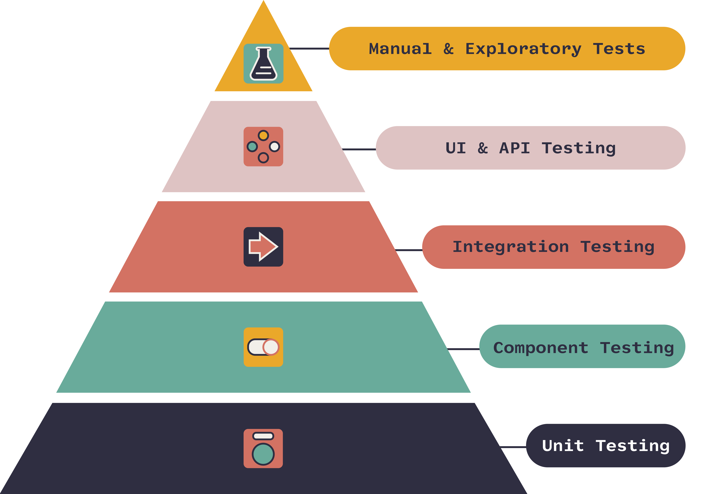

Unit tesztelés
Bevezetés
Az egységtesztelés (Unit Testing) a szoftvertervezés egy olyan folyamata, amelyben az egyes forráskód egységeket ( általában függvényeket vagy metódusokat) külön-külön teszteljük, hogy ellenőrizzük, hogy megfelelően működnek-e az elvárt bemenetek és kimenetek esetén. Az egységtesztek segítenek megerősíteni, hogy az adott egységek működése helyes és várt módon történik, így hozzájárulnak a kód minőségének javításához, valamint a fejlesztési idő és költség csökkentéséhez azáltal, hogy korai szakaszban azonosítják és kijavítják a hibákat. Ebben a szekcióban a teszteléssel és azon belül is a Unit teszteléssel fogunk megismerkedni.
Tesztelés
A szoftvertesztelés a szoftverminőség-biztosítás és így a szoftverfejlesztés részét képezi. A tesztelés egy rendszer vagy program kontrollált körülmények melletti futtatása, és az eredmények kiértékelése. A hagyományos megközelítés szerint a tesztelés célja az, hogy a fejlesztés során létrejövő hibákat minél korábban felfedezze, és ezzel csökkentse azok kijavításának költségeit.
Tesztelési piramis
 Tesztelési piramis
Tesztelési szintek
Unit tesztek
- A Unit tesztelés a szoftvertesztelési piramis alapját képezik.
- Céljuk a meglévő forráskód kis egységeinek tesztelése bármilyen külső függőség nélkül.
- Minden szoftverfejlesztő feladata, a saját forráskódjának a Unit tesztelése, hogy az esetleges hibák minél előbb feltűnjenek.
- JUnit keretrendszer
Komponens tesztek
- A szoftvertesztelési piramis következő szintje, itt már nem csak apró kódrészleteket vizsgálunk, hanem azt is, hogy az egyes komponenseink, hogyan működnek együtt az alkalmazáson belül.
- A különböző up- és down-stream hívásokat mockolhatjuk.
- Ezt is a szoftverfejlesztő végzi.
Integrációs tesztek
- Nagyon hasonló a Component testinghez, csak az alkalmazást nagyobb körben vizsgálja, kevesebb mockolt hívás, több tényleges modul működik együtt.
- Egyes piramisok nem különböztetik meg a component és integration testinget, így nehéz behatárolni, hol helyezkedik el a határ a kettő között.
- Egy jó architektúrában lehetőséget kell adni, hogy az alkalmazás bármekkora szeletét külön lehessen tesztelni a többi modul nélkül is és a tesztjeinknek is fokozatosan kell egyre nagyobb részeit vizsgálniuk az alkalmazásnak.
UI és API tesztek
- Az alkalmazást teljes egészében teszteli az általa nyújtott interfacen vagy felületen keresztül.
- Külső eszközökkel történik az automatizált tesztek futtatása:
- Selenium
- Gatling
- Általában ez már a QA feladatkör.
Manuális tesztek
- A UI és API teszteléshez hasonlóan ez is E2E (végponttól végpontig) tesztelési forma. A nevéből is adódik, ezt kézzel végzik, tesztelési dokumentáció készül a tesztelés kimeneteléről.
- Mivel nem automatizált tesztelésről van szó ez a legköltségesebb tesztelési forma.
- QA szerepköri feladat.
JUnit
A JUnit egy Java nyelvhez írt nyílt forráskódú unit teszt keretrendszer. A JUnit keretrendszer segítségével könnyedén írhatunk és futtathatunk egységteszteket Java alkalmazásokhoz. A JUnit tesztek lehetővé teszik a fejlesztők számára, hogy automatizált módon ellenőrizzék az egyes metódusok vagy osztályok funkcionalitását, így megkönnyítik a hibák felderítését és az alkalmazás megbízhatóságának növelését. A JUnit különféle annotációkat és osztályokat biztosít a tesztesetek definiálásához és végrehajtásához, valamint lehetővé teszi a tesztek egyszerűsített automatizálását és eredményeik könnyű értelmezését. A JUnit széles körben elterjedt és népszerű a Java közösségben, és gyakran használják a fejlesztők a kód minőségének javítására és a szoftverhibák gyorsabb azonosítására.
JUnit annotációk
@Test
@DisplayName("My Test")
void myTestMethod() {
// Teszt kód
}
@BeforeEach
void init() {
// Inicializáció
}
@AfterEach
void cleanUp() {
// Tisztítás
}
@BeforeAll
static void initAll() {
// Globális inicializáció
}
@AfterAll
static void cleanUpAll() {
// Globális tisztítás
}
@Test
@Disabled("Ez a teszteset jelenleg nem futtatható.")
void disabledTest() {
// Teszt kód
}
Assert osztály
A unit tesztelés folyamata során a feladatunk az, hogy meghívjuk a tesztelendő metódust bizonyos paraméterekre, majd
megbizonyosodjunk arról, hogy a kapott eredmények az elvárt viselkedésnek megfelelőek. Ehhez úgynevezett asserteket
írunk, amelyek ellenőrzik a kívánt viselkedést, tulajdonságot.
Az assert metódus nem más, mint a JUnitnak egy olyan metódusa, amely egy ellenőrzést képes megvalósítani, és abban az
esetben, ha az ellenőrzés sikertelen, egy AssertionError kivételt dob, ami jelzi, hogy az adott teszt eset
kiértékelése elbukott. Természetesen a programot addig kell javítani, illetve a teszteket újra futtatni, míg valamennyi
teszt hiba nélkül le nem fut. Amikor egy teszt elbukik, és dob egy AssertionError kivételt, akkor a JUnit
keretrendszer ezt a hibát elkapja, és jelzi a programozó felé.
A különböző assert metódusokat a org.junit.jupiter.api.Assertions package-ben találjuk:
assertTrue(condition);
assertFalse(condition);
assertArrayEquals(expectedArray, resultArray);
assertNotNull(object);
assertNull(object);
assertThrows(ExpectedException.class, () -> {
// Kód, amely dobhat egy ExpectedException típusú kivételt
});
Mockito
A Mockito egy nyílt forráskódú Java keretrendszer, amelyet unit tesztek írásakor használnak a mock objektumok létrehozásához. A Mockito segítségével könnyedén és dinamikusan lehet létrehozni és konfigurálni a mock objektumokat, valamint meghatározni a viselkedésüket és az elvárt válaszokat a tesztek során.
A mock objektum olyan objektum, amelyet a tesztelés során használnak egy másik objektum szimulálására. A mock objektumokat általában olyan helyzetekben használják, amikor egy adott funkció vagy szolgáltatás függ más osztályoktól vagy komponensektől, és a tesztelő csak az aktuális egység tesztelésére koncentrál.
A Mockito néhány fő jellemzője a következő:
- Mock objektumok létrehozása: A Mockito lehetővé teszi a mock objektumok egyszerű létrehozását és inicializálását a tesztek során.
- Viselkedés konfigurálása: A fejlesztők könnyedén konfigurálhatják a mock objektumok viselkedését, és meghatározhatják az elvárt válaszokat és eredményeket a tesztek során.
- Interakció ellenőrzése: A Mockito lehetővé teszi az objektumok közötti interakciók ellenőrzését, hogy megbizonyosodjon arról, hogy a megfelelő metódusok hívták-e meg a mock objektumokat.
- Tesztek egyszerűsítése: A Mockito segítségével egyszerűsíthetők a tesztek azzal, hogy a valós objektumok helyett könnyen kezelhető mock objektumokat használ.
- Széles körű támogatás: A Mockito széles körű támogatást kínál a különböző Java keretrendszerekkel és tesztelési keretrendszerekkel való integrációhoz.
A Mockito használata segíti a fejlesztőket abban, hogy hatékonyan és hatékonyan írjanak teszteket Java alkalmazásaikhoz, és könnyedén kezeljék a mock objektumokat és azok viselkedését a különböző tesztesetekben. Ezáltal a Mockito hozzájárul a megbízható és jól tesztelt Java alkalmazások létrehozásához és karbantartásához.
Használata
Vegyük az alábbi osztályt, amely rendeléseket bonyolít le.
public class OrderService {
private InventoryService inventoryService;
public OrderService(InventoryService inventoryService) {
this.inventoryService = inventoryService;
}
public boolean processOrder(String productId, int quantity) {
int availableQuantity = inventoryService.getAvailableStock(productId);
if (availableQuantity >= quantity) {
inventoryService.updateStock(productId, quantity);
return true;
}
return false;
}
}
public interface InventoryService {
int getAvailableStock(String productId);
void updateStock(String productId, int quantity);
}
Látható, hogy a OrderService osztály teszteléséhez szükségünk van egy InventoryService objektumra is, amelyet az
osztály kívülről kap. Ennek az osztálynak a működése nem fontos számunkra, amikor mi az OrderService osztályt
szeretnénk tesztelni.
import org.junit.Test;
import static org.junit.Assert.*;
import static org.mockito.Mockito.*;
public class OrderServiceTest {
@Test
public void testProcessOrder() {
// Arrange
InventoryService inventoryService = mock(InventoryService.class);
when(inventoryService.getAvailableStock("ABC")).thenReturn(10);
OrderService orderService = new OrderService(inventoryService);
// Act
boolean result = orderService.processOrder("ABC", 5);
// Assert
assertTrue(result);
verify(inventoryService, times(1)).getAvailableStock("ABC");
verify(inventoryService, times(1)).updateStock("ABC", 5);
}
}
Ebben a példában a mock() metódust használjuk az InventoryService interfész mock objektumának létrehozásához. A when()
.thenReturn() módszereket használjuk az elvárt érték beállításához a metódus hívásakor. A verify() metódust használjuk
arra, hogy ellenőrizzük, hogy a megfelelő metódusok megfelelő paraméterekkel lettek-e meghívva a tesztelés során.